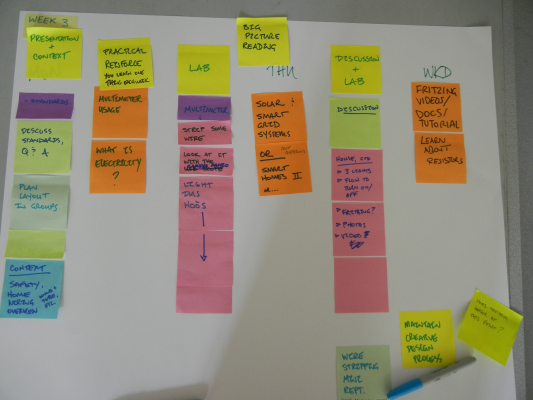

Twitter: @craftoe
Email:
| << prev | Monday | Tuesday | Wednesday | Thursday | Friday | Weekend | next >> |
Week 4
We have three goals this week:
- Complete our wiring plan and test our Freeduinos.
- Learn about the oscilloscope, a fundamental tool in electronics.
Get started on our Contrast Houses.Redo the Wednesday lab.
Monday
Due before class: Distributed Electric Code Research
Materials Needed: Laptop, Freeduino.
You should have completed your research regarding wiring in the Contrast House. First, we will break into groups to bring our work together, and then we will (as a class) create a single document that specifies the wiring for the entire Contrast House.
The remainder of our time will be spent finishing the Freeduino and testing that they work.
Tuesday
Reading: Please read pages 20-24 and 28-30 in the Mims. This reading covers a series of basic concepts:
- Parallel and serial circuits
- Pulses and noise
- Wire
- Resistors
Viewing: You need to watch the video playlist on How to Use an Oscilloscope. This video is 30 minutes long, but is clear and well done. I recommend it highly, and recommend you watch it before class on Wednesday.
Wednesday
Materials Needed: Laptop, Freeduino.
- Scope Overview / Discussion (20m)
- Blinking and Fading (1h)
- Writeup (30m)
Our first mini-lab (to be completed in class, ideally) will be on blinking and fading LEDs. This is, in part, a lab about getting used to our programming environment, Flow, as well as starting to use the Rigol 1102e oscilloscope.
Thursday
UPDATE: The lab on Wednesday saw a 50% failure rate of software on Windows 7 machines. Everything ran… except it was common for avrdude to fail 85% of the way through an upload. This indicates a very odd hardware interaction problem, in that avrdude runs, and can send code to the Arduino, but consistently fails part way through the upload of code. Given that there was no clear indicator amongst machines—some were new, some were old, some had recently been reimaged, some had not been reimaged for a long time, etc.—it was almost impossible to solve the problem in an easy/prompt way.
This left us with roughly 8-9 students (out of 22) who had made little to no progress on the lab. This, obviously, prevents far too many people from doing productive work on a writeup, and it keeps us from building on the Arduino throughout the rest of the term.
I probably should have left the reading and quiz in place, but did not. The original plan for Thursday is embedded in the comments for this page below.
Friday
Materials Needed: Laptop, Freeduino.
You still need your laptop, and you need roughly 5GB of free space on the hard drive.
- Recap/plan (5m)
- Install Virtual Machines (30m)
- Walkthrough (30m) (while installing)
- Reshuffle Partners
- Attempt #2
The original plan for Friday is embedded in the comments for this page below.
Weekend
Reading: Read pages 25-30 and 40-41 in the Mims. This covers a selection of additional electronic components that we will be working with in our Contrast Houses.
Active Prep: The quiz on Monday will cover all of the reading material from this week. In terms of “details,” you’ll want to refresh yourself on how to read resistors. There are some resources online you might use:
- Color Code Challenge
This page provides some quiz-type materials to help you learn the color codes. - Resistor Colour Code
If you get past the British English (eg. “colour”), this quiz was really useful for testing whether I knew things well. I scored 733/1000 points. (Ten questions; they’re timed.)
Writing: Go back to your Results and Reflection from the Plushie Monster Writeup. Look at the prompt, and use that to refocus your existing reflection into a document that captures the key outcomes from the project for you. It should be between 1 and 3 paragraphs in length.
TO BE CLEAR: This should represent an attempt to write an excellent piece of text. We will be workshopping this piece in class, and I am not interested in something you hacked together in 10 minutes. Write the piece. Read it out loud. Ask yourself:
- Does the document set out a clear theme, and support it throughout?
- Does each paragraph have a clear start, and support that idea throughout?
- Does each sentence make sense, grammatically?
- Is the document free of spelling errors?
- When you read it out loud, does it “flow?”
I am asking you to take the time to write a short, but excellent, piece of text that others will read. Bring care and craft to the writing, so that it represents your best effort.
Please upload your document to Moodle before noon on Monday so I can have hardcopy available for us to workshop.
History
This is the original planning document for this part of the semester, kept for historical purposes only.
